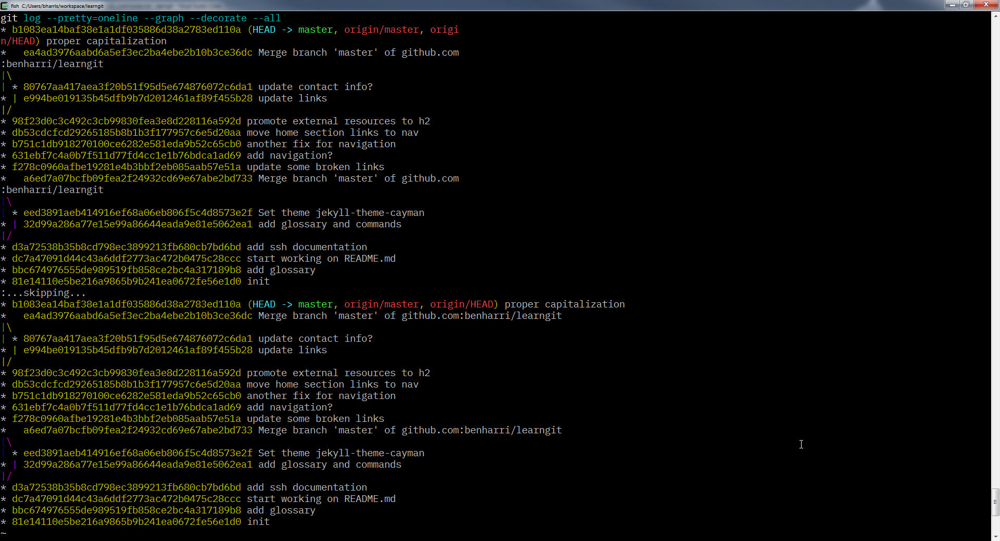

common commands¶
These are commands and options that I use frequently. See the linked documentation for more options and information.
add¶
git add [--all] [<files>]
Add files from the working tree to the staging area. commit operates on the staging area.
Try interactive staging: git add -i
branch¶
git branch [<branch>]
Show branches and create new ones.
checkout¶
git checkout [<branch>]
Switch branches or restore working tree files.
The -b switch creates the branch if it doesn't exist and switches to it.
clone¶
git clone [<remote_url>] [directory_to_clone_into]
Download a copy of a remote repository from a server.
commit¶
git commit [-a] [-m "commit message here"]
Create a snapshot of the staging area. Record staged changes.
The -a switch will add all modified and deleted files (will not pick up new files that have been added to the repo) to the staging area before committing.
diff¶
git diff [<from_path-spec>]..[<to_path-spec>]
Show changes by line. With no arguments, diff shows all unstaged changes.
Other uses would be comparing changes between branches or between a range of commits (referred to by their hashes, which you can see with log).
fetch¶
git fetch [<repository> [<refspec>]]
Download objects and refs from another (usually remote) repository.
init¶
git init [--bare] [--shared] [<directory>]
Create an empty repo or reinitialize an existing one.
log¶
git log [<revision range>]
Show commit logs. There are a lot of options here. Check out the documentation.
Here are some of the log options that I use often. Some tips were taken from git-tips
All commits since forking from master
* git log --no-merges --stat --reverse master..
Visualize the history as a tree
* git log --pretty=oneline --graph --decorate --all

List changes specific to a certain file
* git log --follow -p -- <file_path>
merge¶
git merge [<branch>]
Join two or more development histories together.
merge incorporates changes from the named commits provided as arguments into the current branch.
Sometimes you will have changed the same line as someone else. This will result in a merge conflict. Some GUI clients have tools to help resolve merge conflicts, but it is good to know how to do it manually.
Here are lines that are either unchanged from the common
ancestor, or cleanly resolved because only one side changed.
<<<<<<< yours:sample.txt
Conflict resolution is hard;
let's go shopping.
=======
Git makes conflict resolution easy.
>>>>>>> theirs:sample.txt
And here is another line that is cleanly resolved or unmodified.
- This is what you will see as the result of a merge conflict. Simply keep the lines you would like, remove the conflict markers, and commit the result.
See the documentation for more info on how to resolve merge conflicts.
pull¶
git pull [--rebase] [--ff] [--no-ff] [<remote name>] [<branch name>]
pull is a synonym for fetch followed immediately by a merge. It's a nice shortcut for that.
Use the --rebase option when you haven't made any changes and want to get the latest changes that others have pushed to the remote.
To sync with remote and overwrite local changes:
git fetch origin && git reset --hard origin/master && git clean -f -d
push¶
git push [-u] [<remote name>] [<branch name>]
The -u option will set the following branch and remote to the default upstream. This means you can simply do git pull without the refspec.